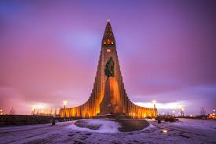
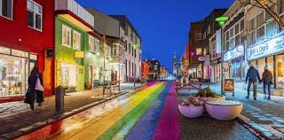
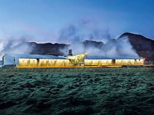
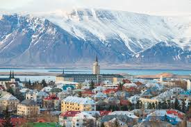
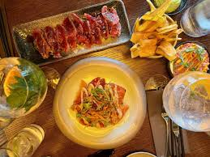
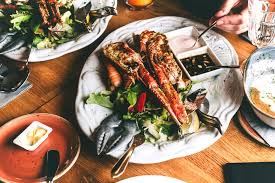

Reykjavik, capital da Islândia, é conhecida por utilizar quase 100% de energia renovável. A cidade aproveita recursos naturais como energia geotérmica e hidrelétrica. Além disso, Reykjavik possui um ambiente natural preservado com vulcões, geleiras e paisagens únicas.

A igreja Hallgrimskirkja é um dos marcos arquitetônicos da cidade.

O centro de Reykjavik possui arquitetura colorida e cultura vibrante.

A cidade utiliza energia geotérmica para aquecimento e eletricidade.

As paisagens naturais da Islândia são preservadas e protegidas.

A culinária islandesa valoriza ingredientes naturais e pescados locais.

Restaurantes utilizam alimentos frescos produzidos localmente.